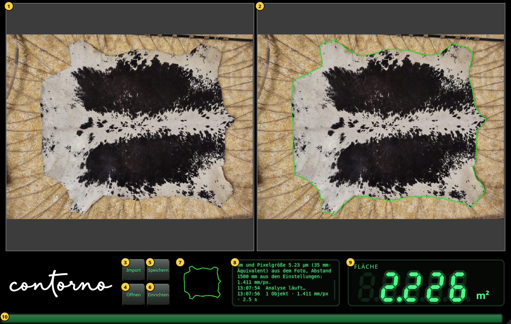
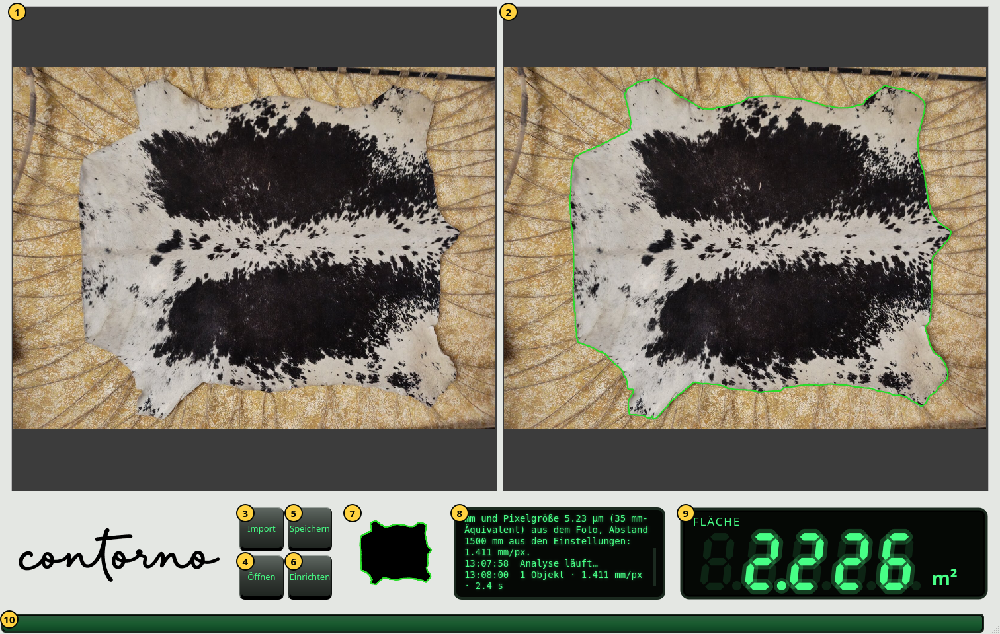

Erste Schritte
Das Fenster, seine Teile, Zoomen und das helle Design.
Öffnen Sie Contorno Indicator. Das Fenster füllt den Bildschirm. Vor dem ersten Foto zeigt die Anzeige Striche, und die Meldungsanzeige sagt Importieren Sie ein Foto der Objekte auf dem Tisch.


- Das Foto, wie es aufgenommen wurde, unverändert.
- Dasselbe Foto mit der gefundenen Kontur in Grün. Innerhalb dieser Kontur wird die Fläche gemessen.
- Import — ein Foto des Objekts auf dem Tisch wählen. Seine Analyse beginnt sofort.
- Öffnen — eine gespeicherte Prüfung wieder anzeigen. Siehe Prüfungen speichern und öffnen.
- Speichern — Foto, Kamera, Kontur und Fläche in einer Zip-Datei aufbewahren.
- Einrichten — die Kamera, die Sprache und das Design. Siehe Einrichten.
- Die Maske: das Objekt, wie die Analyse es sieht, schwarz, mit seiner Kontur in Grün.
- Die Meldungsanzeige. Jede Zeile beginnt mit ihrer Uhrzeit. Sie sagt, was importiert wurde, woher der Maßstab kommt, wie viele Objekte gefunden wurden und wie lange es dauerte.
- Die Anzeige: die Fläche innerhalb der Kontur.
- Der Fortschrittsbalken. Er läuft, während das Foto analysiert wird, und bleibt eine Sekunde lang voll, wenn das Ergebnis da ist.
Zoomen und verschieben
Drehen Sie das Mausrad über einem Foto, um am Zeiger hinein- oder herauszuzoomen. Ziehen Sie, um zu verschieben. Beide Fotos zoomen und verschieben sich gemeinsam, so dass die Kontur rechts immer über derselben Stelle liegt wie das Foto links. Ein neues Foto wird wieder ganz gezeigt.
Die Anzeige
Die Anzeige zeigt die Fläche unter 0.1 m² in cm² (eine Nachkommastelle, zum Beispiel 125.4 cm²) und ab 0.1 m² in m² (drei Nachkommastellen, zum Beispiel 2.226 m²). Kommt ein neuer Wert, zählen die Ziffern vom vorigen zu ihm hin. Zahlen werden wie im Programm mit Punkt geschrieben.
- Striche: noch kein Foto, oder die Analyse ist fehlgeschlagen. Die Meldungsanzeige sagt, warum.
- Gedimmte Ziffern: der Wert des vorigen Fotos, während das neue analysiert wird. Eine gedimmte Zahl ist nie das aktuelle Ergebnis.
- Helle Ziffern: die Fläche innerhalb der rechts gezeigten Kontur.
Das helle Design
Das Fenster ist standardmäßig schwarz. Die Design-Taste unter Einrichten macht die Bereiche hellgrau mit schwarzem Schriftzug; die Fotos ändern sich nicht.

